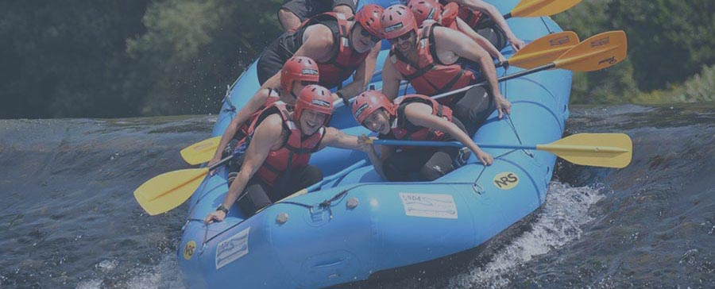

Benvenuti badubnasuwdbuashhd
Onda Selvaggia® è l’unico Centro di Sport Fluviali e Outdoor che dal 1995 opera nell’ambito
delle attività sportive fluviali (Rafting, Kayak e Hydrospeed) e di attività legate all’ambiente
montano (Trekking, Nordic Walking, Bici, Arrampicata, Ciaspole).
L'esperienza acquisita in tutti questi anni ci permette di formulare proposte didattiche
differenziate che possono essere modulate sugli obiettivi didattici e l'età dei partecipanti.
Sicurezza e Alti standard di qualità sono inoltre garantiti non solo dall’esperienza dei nostri
Collaboratori, ma anche dall’equipaggiamento conforme alle vigenti leggi sulla sicurezza
omologato EN UNI ISO.
Onda Selvaggia Si avvale della collaborazione di personale altamente qualificato, dotato di
Titoli e Brevetti riconosciuti a livello Nazionale rilasciati da Enti e Federazioni con le diverse
qualifiche necessarie per effettuare le discipline sportive fluviali (Maestri di Canoa Federali /
Federazione Italiana Canoa Kayak, Guide Rafting e Hydrospeed / UISP, CSEN) e le attività legate
all’ambiente montano (Accompagnatori e Guide Naturalistiche riconosciuti dalla Regione Veneto,
Istruttori e aspiranti Guide Alpine, Istruttori ANWI, Accompagnatori Bici BdG)
La Sede, all’interno di un’area verde in riva al fiume, è dotata di spogliatoi, docce calde e
servizi igienici anche per persone con disabilità, palestra di arrampicata in artificiale, area
pic-nic, ampio parcheggio per i pullman e punto ristoro.